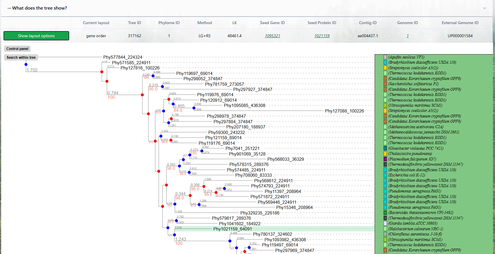

PHYLOMEDB
"Web application developed at the Barcelona Supercomputing Center for the Gabaldon Lab to explore and analyze phylogenetic data. PhyloMedb provides researchers with tools to visualize evolutionary relationships, explore gene and species data, and interact with complex biological datasets through an accessible web interface."
BARCELONA SUPERCOMPUTING
CENTER
BCN-ESP 41.3974° N, 2.1312° E

I continued the migration of PhyloMedb, working with the guidance of my mentor and colleague Arnau, who helped me understand how the existing platform and its different components worked. My work focused on updating outdated code and replacing older implementations with newer technologies, fixing existing functionality issues, and monitoring the application to ensure everything worked correctly. I also checked that the different components were properly connected and that the application remained stable and free of errors. On the frontend, I worked with Next.js to update and improve existing visualizations, replacing older chart implementations with newer solutions. The frontend communicates with the FastAPI backend through APIs, while the backend handles the data and performs the necessary calculations to generate visualizations and make comparisons. The application uses MariaDB as its database, connected to the backend, with the different components running in Docker.